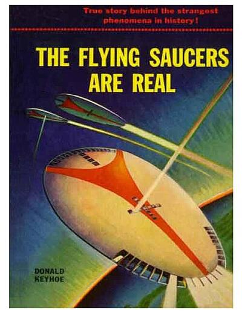

The Flying Saucers Are Real

Argued that flying saucers were real and that the Air Force was hiding what it knew. It grew out of Keyhoe's popular article in True magazine the same year. 1
Open in the interactive Watcher
Related
- Donald Keyhoe Author
Sources
- Donald Keyhoe Wikipedia